От стоянок древнего человека до полёта Ян Ливэя. Китайско-русское издание, Пекин, 2006.
↑ ОглавлениеДоимперский Китай
До объединения Китая
中国历史的开篇——先秦
Авторы начинают с археологических находок и преданий, затем переходят к Ся, Шан и Чжоу. По мере приближения к эпохе Шан характер свидетельств меняется: о правителях и обрядах рассказывают уже надписи на бронзе и гадательных костях. Позднее власть чжоуского вана ослабла, и за первенство стали бороться отдельные царства.
При Шан столица несколько раз меняла место. После переноса в Инь, близ нынешнего Аньяна в Хэнани, двор оставался там около трёх столетий. Отсюда второе название династии и связь её истории с находками именно в Аньяне.
 Надписи на древней кости
Надписи на древней кости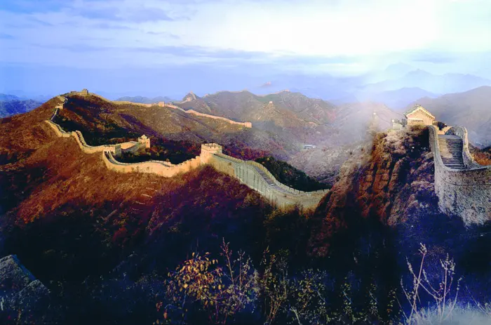
Укрепления Великой стены на горном гребнеПервые люди на территории Китая
中国境内最早的人类
Зубы из Юаньмоу в Юньнани и находки из Чжоукоудяня близ Пекина дают разные виды свидетельств о ранних людях. По костям судят об их облике, по орудиям и следам стоянок — о занятиях. Переход к шлифованному камню, выращиванию растений и разведению животных обозначает в книге начало неолита.
На рисунках можно сравнить реконструкции облика людей из разных стоянок. Человек из Верхней пещеры в Чжоукоудяне жил примерно 18 тысяч лет назад и по облику уже мало отличался от современного человека.
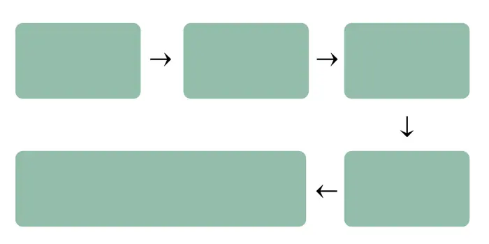
Схема последовательности этапов развития древнего человека Расписная чаша неолитической культуры Яншао
Расписная чаша неолитической культуры ЯншаоПаньгу и Нюйва
开天辟地的创世神话
В одном предании великан Паньгу разделяет небо и землю, а после его смерти части тела превращаются в горы, реки и небесные светила. Нюйва в другом предании лепит людей из глины. Эти сюжеты объясняют происхождение мира и человека языком мифа.
Сначала мир Паньгу напоминает яйцо. Великан упирается ногами в землю, подпирает руками небо и растёт вместе с расстоянием между ними. Его глаза становятся солнцем и луной, кровь — реками, пот — дождём и росой.
 Схема шестидесяти четырёх гексаграмм Фуси
Схема шестидесяти четырёх гексаграмм Фуси Древняя фигурка человека
Древняя фигурка человекаЯнь-ди, Хуан-ди и предки Хуася
华夏之祖
Предания связывают Янь-ди с земледелием, а Хуан-ди — с ремёслами и изобретениями. В рассказе о союзе племён и борьбе с Чию возникает представление об общих предках. Отсюда выражение «потомки Яня и Хуана», сохранившееся как обозначение культурного родства.
В предании сближение племён начинается с поражения Янь-ди. На его земли нападает Чию, вождь объединения Цзюли, и Янь-ди обращается к Хуан-ди за помощью. Поэтому в рассказе о происхождении хуася имена двух предков стоят рядом.
 Карта преданий о Хуан-ди и Юе
Карта преданий о Хуан-ди и Юе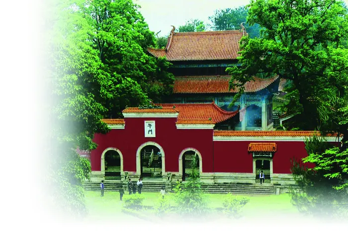
Мемориал Янь-ди в Чжучжоу, ХунаньВеликий Юй укрощает потоп
大禹治水
По преданию, попытка Гуня остановить воду насыпями потерпела неудачу. Его сын Юй стал расчищать русла и отводить воду к морю. Рассказ о том, как он проходил мимо собственного дома, не прерывая работу, объясняет его авторитет и право возглавить общину.
Отец Юя, Гунь, пытался преградить воде путь дамбами. Юй решил дать воде выход к морю по речным руслам. По преданию, работа заняла тринадцать лет, за которые он трижды прошёл мимо собственного дома.
У-ван и падение Шан
武王伐纣
Чжоуский правитель У-ван собрал союз против последнего шанского царя. Победа у Муе открыла путь к столице и дала начало Западной Чжоу. В традиционном повествовании жестокость прежнего правителя объясняет, почему подданные перестали его поддерживать.
Авторы сопоставляют двух правителей Шан. При У Дине царство переживало подъём. Последний правитель, Чжоу-синь, собирал сокровища в башне Лутай и тратил богатства двора на пиры, пока на западе набирало силу Чжоу.
 Поход У-вана против Шан на карте
Поход У-вана против Шан на карте Храм Чжоу-гуна
Храм Чжоу-гунаВосточный поход Чжоу-гуна
周公东征
После смерти У-вана его наследник был ещё мал. Регент Чжоу-гун столкнулся с мятежом, в котором участвовали члены правящего дома и сторонники Шан. Подавление восстания, устройство восточного центра в районе Лояна и распределение владений закрепили власть новой династии.
Победители сначала оставили земли вокруг бывшей столицы Шан в руках У Гэна, сына последнего шанского правителя. После смерти У-вана наследнику было всего тринадцать лет. Регентство Чжоу-гуна вызвало сопротивление даже среди родственников нового царя.
Пять гегемонов эпохи Чуньцю
春秋五霸
Чжоуский ван сохранял ритуальное первенство, но военную силу сосредоточили правители царств. Гегемон собирал князей на совещания, скреплял союзы клятвами и возглавлял походы. Возвышение Ци при Хуань-гуне и его советнике Гуань Чжуне показывает, какую роль играли хозяйственные реформы.
В начале периода насчитывалось более ста княжеств. Возвышение восточного Ци авторы объясняют реформами Гуань Чжуна при Хуань-гуне. Усиление хозяйства позволило князю выступить защитником соседей и созывать их правителей на общие встречи.
 Княжества эпохи Чуньцю на карте
Княжества эпохи Чуньцю на карте Сражение эпохи Чуньцю в живописной реконструкции
Сражение эпохи Чуньцю в живописной реконструкцииСемь Сражающихся царств
战国七雄
Цинь, Чу, Ци, Янь, Хань, Чжао и Вэй боролись за землю и население. В отличие от прежних союзов князей, теперь исход соперничества зависел от способности властей собирать налоги и содержать большие армии. Реформы Шан Яна усилили Цинь и подготовили объединение страны.
Расстановка сил менялась даже внутри семёрки. Сначала Хань, Чжао и Вэй выступали вместе и добивались успеха против более крупных соседей. После распада союза преимущество постепенно перешло к Ци и Цинь.
Конфуций и его ученики
大教育家孔子
Кун Цю из царства Лу искал правителя, готового управлять личным примером. Преподавание принесло ему больше последователей, чем служба при дворе. В беседах с учениками он связывал человечность жэнь с поступками, а обучение — с размышлением. Из записей этих бесед сложился «Лунь юй».
Конфуций происходил из царства Лу, из окрестностей нынешнего Цюйфу. Он требовал от правителя беречь труд подданных. Тот же принцип проявлялся в школе Конфуция, где учиться могли выходцы из семей разного достатка и положения.
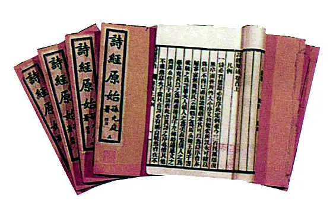
«Книга песен» в традиционном издании Конфуций в окружении учеников
Конфуций в окружении учениковСоперничество ста школ
诸子百家
Политическая раздробленность заставила мыслителей по-разному ответить на один вопрос: как прекратить смуту? Конфуцианцы обращались к воспитанию и ритуалу, моисты — к взаимной заботе, легисты — к единым законам и наказаниям. Даосская традиция предлагала ограничить вмешательство правителя в жизнь людей.
Лао-цзы объяснял перемены через пары противоположностей. Сила может смениться слабостью, а удача — несчастьем. В главе это один из примеров того, как мыслители одной эпохи по-разному отвечали на вопрос об устройстве мира.
 Надпись о «Дао дэ цзине» на скале
Надпись о «Дао дэ цзине» на скале Высеченный на камне текст
Высеченный на камне текстСунь-цзы и военная мысль
世界第一部兵书——《孙子兵法》
Книга представляет трактат «Искусство войны» как памятник мысли эпохи соперничающих царств. Его историческое значение авторы видят в переходе от прославления личной храбрости к анализу решений полководца. Изречения трактата пережили породившую их эпоху и вошли в китайскую речь.
Сунь У был родом из Ци, но свой труд представил правителю другого царства — У. В книге происхождение трактата связано с соперничеством князей конца Чуньцю. Позднее текст стали изучать далеко за пределами государства, которому служил автор.
 Разворот трактата Сунь-цзы
Разворот трактата Сунь-цзы Портрет Сунь У
Портрет Сунь УЦинь и Хань
Первые империи: Цинь и Хань
封建大一统时期——秦汉
В 221 году до н. э. царство Цинь завершило объединение страны. Династия быстро пала, но Хань унаследовала имперскую систему управления. При ней расширились связи с западными областями, а при дворе и за его пределами появились труды по истории, астрономии и медицине.
Две части эпохи Хань вместе продолжались более четырёх веков. Название династии сохранилось в словах «ханьцы», «ханьцзы» и «ханьюй». Среди достижений этого времени авторы особо выделяют изготовление бумаги.
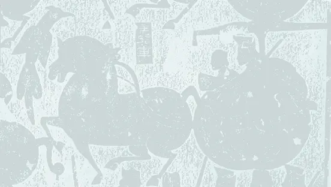
Рельеф с колесницей и всадниками Ряды терракотовых фигур в раскопе
Ряды терракотовых фигур в раскопеЦинь Шихуан и устройство империи
中国的第一位皇帝——秦始皇
После завоевания шести царств Ин Чжэн принял титул первого императора. Территорию разделили на округа и уезды с назначаемыми чиновниками. Единое письмо, монета, меры и веса облегчили управление бывшими царствами. Цена преобразований проявилась в тяжёлых повинностях населения.
Начало возвышения Цинь книга связывает с реформами Шан Яна. Когда Ин Чжэн унаследовал престол, прежнее небольшое западное княжество уже могло соперничать с сильнейшими соседями. Покорение шести царств заняло десять лет.
 Территория империи Цинь
Территория империи Цинь Терракотовый воин
Терракотовый воинКак возникла Великая стена
万里长城
Ещё до объединения отдельные царства строили собственные укрепления. При Цинь северные линии соединили и расширили. Стена требовала постоянных работ и содержания гарнизонов; знакомые сегодня кирпичные участки относятся преимущественно к более поздней эпохе Мин.
В состав циньской стены вошли участки, построенные прежде царствами Цинь, Чжао и Янь. При Мин строительство возобновилось в большом масштабе. Именно на восточных участках этой более поздней стены особенно заметна кладка из камня и кирпича.
Восстание Чэнь Шэна и У Гуана
大泽乡起义
В 209 году до н. э. отряд людей, отправленных на службу, задержался в пути из-за дождей. По рассказу источника, угроза наказания за опоздание подтолкнула их к восстанию в Дацзэсяне. Сам мятеж был подавлен, но против Цинь уже выступили новые силы.
Непосредственным поводом в рассказе становится ливень. Отряд примерно из девятисот человек задержался около Дацзэсяна на пути к месту службы. По изложению книги, опоздание грозило казнью, и люди поддержали решение Чэнь Шэна и У Гуана восстать.
 Застава на пути войска Чэнь Шэна
Застава на пути войска Чэнь Шэна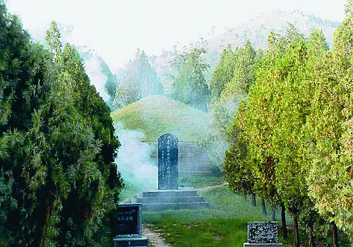
Гробница Чэнь Шэна в Шанцю, ХэнаньЛю Бан и Сян Юй
刘邦与项羽
После падения Цинь бывшие союзники начали борьбу за верховную власть. Сян Юй опирался на военный авторитет, Лю Бан сумел привлечь способных советников и удержать поддержку союзников. Победа Лю Бана в 202 году до н. э. определила исход соперничества Чу и Хань.
В конце борьбы против Цинь Лю Бан вошёл в Сяньян, а Сян Юй одержал победу у Цзюйлу. После падения общего противника прежние союзники разошлись. В пользу Лю Бана сыграло и его обещание жителям бывшей столицы отменить суровые циньские порядки.
 Портрет Лю Бана
Портрет Лю Бана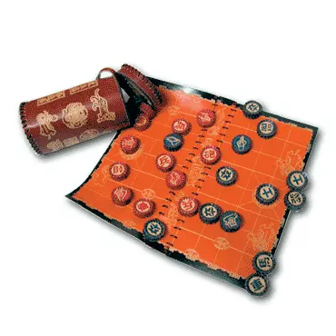
Фигуры и доска для китайских шахмат сянциИмператор У-ди
汉武大帝
При ханьском У-ди двор ограничил самостоятельность удельных владений и укрепил центральную власть. Войны с сюнну и посольства на запад расширили горизонт империи. Конфуцианская учёность приобрела особое значение для образования чиновников.
Ранние ханьские князья могли собирать налоги, назначать чиновников и даже чеканить монету. У-ди разрешил дробить их владения между сыновьями. С каждым таким разделом уменьшалась территория, которой один князь мог распоряжаться самостоятельно.
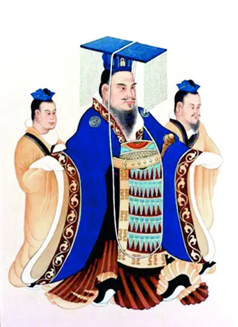
Император У-ди в церемониальном облачении Сражение в Мобэе в 119 году до н. э.
Сражение в Мобэе в 119 году до н. э.Чжан Цянь и Западный край
张骞出使西域
Посольство Чжан Цяня отправилось искать союз с юэчжи против сюнну. Плен на годы задержал путешествие, а желанный союз заключить не удалось. Зато после возвращения двор получил сведения о городах, товарах и путях Центральной Азии. Эти знания пригодились следующим посольствам и торговцам.
В 138 году до н. э. Чжан Цянь отправился искать союз с юэчжами. Задержанный сюнну, он провёл у них более десяти лет, выучил язык и лишь затем продолжил путь. Сведения о землях на западе оказались ценны и после того, как военный союз заключить не удалось.
Ван Чжаоцзюнь за пределами застав
昭君出塞
Ван Чжаоцзюнь вышла замуж за шаньюя Хуханье. Династический брак служил средством закрепить отношения между двором Хань и сюнну. Позднейшая литература запомнила дипломатическое событие через личный образ женщины, покидающей родные места.
Брак Ван Чжаоцзюнь стал возможен после раскола среди сюнну. Шаньюй Хуханье искал поддержки Хань и лично приезжал ко двору в Чанъань. Так решение одной дворцовой девушки оказалось связано с отношениями двух правящих домов.
Сыма Цянь и «Исторические записки»
司马迁与《史记》
Сыма Цянь продолжил замысел отца: собрать историю от легендарной древности до собственной эпохи. В «Шицзи» рядом с летописями правителей стоят биографии полководцев, советников и людей иного положения. Так события можно увидеть и в хронологии двора, и через выбор отдельного человека.
Сыма Цянь начал собирать сведения в путешествиях ещё в молодости. Позднее должность придворного историографа, которую прежде занимал его отец, открыла ему доступ к письменным памятникам. Свой большой труд он начал в 104 году до н. э.
 Минская рукопись «Исторических записок»
Минская рукопись «Исторических записок» Мемориал Сыма Цяня на возвышенности
Мемориал Сыма Цяня на возвышенностиЧжан Хэн: небо и землетрясения
科学家张衡
Чжан Хэн при Восточной Хань занимался наблюдением небесных движений и устройством астрономических приборов. Особую известность ему принёс прибор, указывавший направление далёкого землетрясения. Сработавший механизм позволял узнать, откуда ждать донесения о подземном толчке.
В Лояне прибор Чжан Хэна однажды указал направление толчка, которого местные жители вовсе не почувствовали. Его сочли неисправным. Лишь через несколько дней из Ганьсу пришло известие о землетрясении.
 Портрет Чжан Хэна
Портрет Чжан Хэна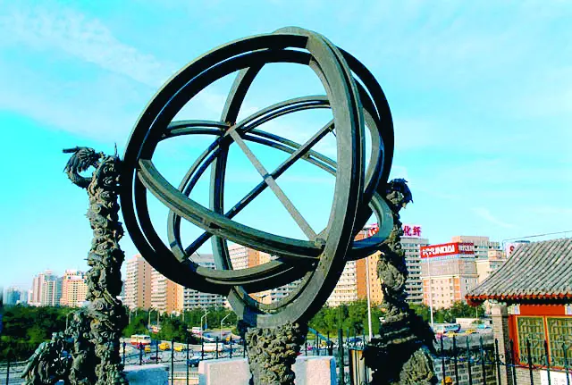
Армиллярная сфера для наблюдения небесных телЧжан Чжунцзин и Хуа То
“医圣”张仲景与“外科鼻祖”华佗
Опыт эпидемий побудил Чжан Чжунцзина систематизировать наблюдения за признаками болезней и их течением. Биографическая традиция связывает Хуа То с хирургией и лечебными упражнениями. Раздел рассказывает о месте обоих врачей в истории китайской медицины.
Интерес Чжан Чжунцзина к лечению лихорадок в книге имеет личную причину. Во время эпидемий он потерял многих близких. Работая над трактатом, врач сопоставлял старые медицинские сочинения с рецептами, которые собирал у современников.
↑ ОглавлениеТроецарствие, Цзинь и Южные и Северные династии
Троецарствие, две Цзинь, Север и Юг
封建国家的分裂和民族大融合时期——三国两晋南北朝
После распада Хань возникли Вэй, Шу и У. Западная Цзинь ненадолго объединила их владения; затем политические центры севера и юга вновь разошлись. Переселения и служба людей разного происхождения при новых дворах меняли население, хозяйство и культуру.
Три центра власти легко привязать к современной карте. Столица Вэй находилась в Лояне, Шу — в Чэнду, У — в районе Нанкина. Когда в 280 году Западная Цзинь подчинила У, страна на короткое время вновь оказалась под одной властью.
Цао Цао и объединение севера
曹操
В конце Хань Цао Цао получил контроль над двором и действовал от имени императора. Военные земледельческие поселения снабжали его силы, а победа над Юань Шао укрепила власть на севере. Императорский титул династии Вэй впоследствии принял его сын Цао Пэй.
Увеличение армии поставило перед Цао Цао хозяйственную задачу. В промежутках между походами солдаты возделывали землю. Военные поселения давали зерно для войска и помогали вернуть в оборот запустевшие земли севера.
 Цао Цао в театральном гриме
Цао Цао в театральном гриме Сценический образ Цао Цао
Сценический образ Цао ЦаоЧжугэ Лян и государство Шу
诸葛亮
Лю Бэй разыскал Чжугэ Ляна и пригласил его на службу. Советник связал будущее Лю Бэя с опорой на западные области и союзом с Сунь Цюанем. Позже он руководил делами Шу при наследнике Лю Бэя. В культурной памяти его имя стало обозначением мудрого советника.
До службы у Лю Бэя Чжугэ Лян жил в Лунчжуне. Книга описывает его привычку искать основную мысль сочинения и сопоставлять прочитанное с происходящим вокруг. Так будущий советник изучал и географию, и отношения между правителями.
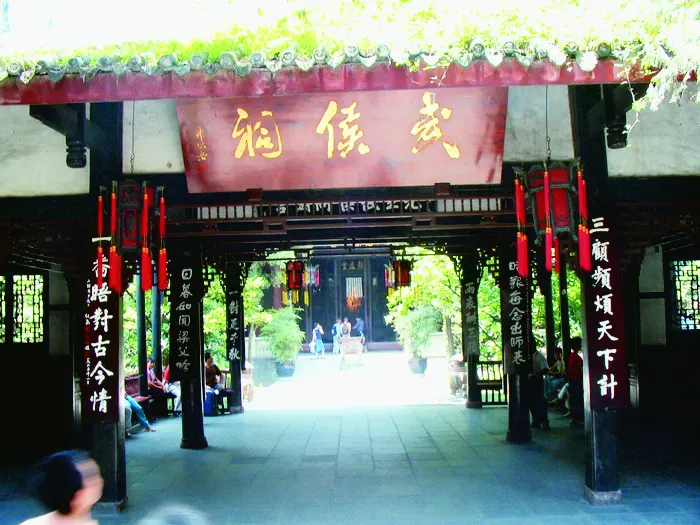
Храм Ухоуцы в Чэнду в память о Чжугэ Ляне Чжугэ Лян с веером
Чжугэ Лян с вееромЧиби: предел продвижения Цао Цао
赤壁之战
В 208 году войска Лю Бэя и Сунь Цюаня остановили продвижение Цао Цао на Янцзы. Исход сражения у Красных скал сохранил самостоятельность южных сил. Это один из поворотных моментов, объясняющих последующее разделение Китая на три государства.
После объединения севера Цао Цао у Лю Бэя и Сунь Цюаня появился общий противник. Их владения и войска до этого оставались самостоятельными. Глава показывает роль Чжугэ Ляна в переговорах, сделавших их временными союзниками.
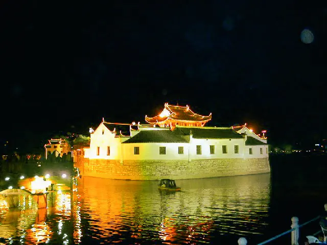
Павильон на озере Ганьтанху в Цзюцзяне Карта событий у Чиби
Карта событий у ЧибиСмута восьми князей
西晋八王之乱
После смерти основателя Западной Цзинь представители правящего рода Сыма вступили в борьбу за контроль над двором. В конфликт оказались втянуты региональные войска. Долгая междоусобица истощила династию вскоре после того, как она объединила страну.
Сыма Янь рассчитывал укрепить дом Цзинь, раздав владения двадцати семи родственникам. Князья получили собственные опоры в провинциях. Когда начался спор о власти при дворе, семейный конфликт охватил страну и растянулся на шестнадцать лет.
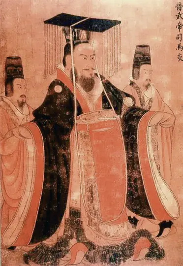
Сыма Янь, основатель Западной Цзинь Князья дома Сыма в изображении художника
Князья дома Сыма в изображении художникаБитва на реке Фэйшуй
淝水之战
В 383 году правитель Ранней Цинь Фу Цзянь попытался подчинить Восточную Цзинь. Поражение его армии сохранило южное государство, а северная держава вскоре распалась. Книга рассматривает Фэйшуй как событие, продлившее политическое разделение севера и юга.
После утраты северной столицы двор Восточной Цзинь обосновался в Цзянькане, нынешнем Нанкине. На севере возвысилась Ранняя Цинь во главе с Фу Цзянем. Поэтому на Фэйшуй столкнулись государства, претендовавшие на объединение обеих частей страны.
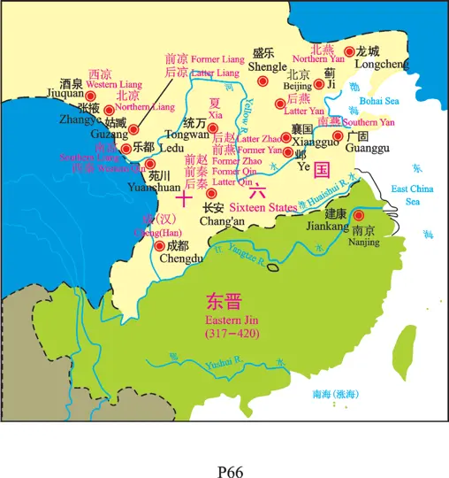
Восточная Цзинь и Шестнадцать государств Карта битвы при Фэйшуй
Карта битвы при ФэйшуйРеформы Сяовэнь-ди
孝文帝改革
Император Северной Вэй перенёс столицу из Пинчэна в Лоян. При дворе вводились китайская одежда, язык и фамилии, поощрялись браки между представителями разных знатных родов. Через повседневные правила менялся характер династии, основанной сяньбийским родом Тоба.
Северную Вэй основал сяньбийский род Тоба. Прежде его люди кочевали в степи, затем осели и занялись земледелием. После объединения севера в 439 году двору предстояло управлять населением с разными языками и обычаями.
 Сяовэнь-ди и его свита
Сяовэнь-ди и его свита Каменная статуя эпохи Северной Вэй
Каменная статуя эпохи Северной ВэйХуа Мулань и народная баллада
花木兰代父从军
В балладе Мулань занимает место престарелого отца в армии и много лет служит вдали от дома. Вернувшись, она отказывается от чинов и вновь надевает женское платье. Книга знакомит здесь с литературным образом долга и семейной преданности, чья биография известна прежде всего из песни.
Баллада начинается со звука ткацкого станка, рядом с которым вздыхает Мулань. В семье пришла очередь отца отправляться на службу. Решение дочери занять его место переводит рассказ из домашней обстановки в многолетнее странствие.
 Хуа Мулань в бумажной вырезке
Хуа Мулань в бумажной вырезкеКаллиграф Ван Сичжи и художник Гу Кайчжи
“书圣”王羲之与“画绝”顾恺之
Ван Сичжи прославился свободой и ритмом кисти; предисловие к стихам из Павильона орхидей стало образцом каллиграфии. Для Гу Кайчжи в портрете особенно важным было передать характер человека. Оба мастера показывают, как индивидуальный стиль стал предметом самостоятельного восхищения.
Ван Сичжи учился у наставницы Вэй и в путешествиях изучал надписи старых мастеров на камне. С его упражнениями связано предание о пруде в Шаосине, куда он приходил промывать кисти после занятий.
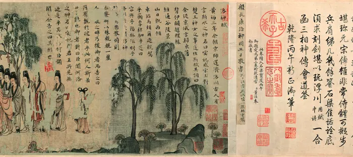
Фрагмент старинного свитка с живописью и каллиграфическими надписями Фрагменты свитка Гу Кайчжи
Фрагменты свитка Гу КайчжиЦзу Чунчжи и число π
数学家祖冲之
Математик V века указал узкий интервал для отношения длины окружности к диаметру и предложил дробь 355/113. Она позволяет проверить точность результата обычным делением. Его занятия календарём связывали математику с практической задачей согласовать счёт времени с наблюдениями неба.
Число π появляется в главе как отношение длины окружности к диаметру. Трудность состояла в том, чтобы установить, между какими близкими значениями лежит это отношение. Так можно было судить о точности вычисления.
↑ ОглавлениеСуй и Тан
Объединение Суй и расцвет Тан
封建社会的繁荣时期——隋唐
Суй восстановила единство севера и юга, но тяготы больших государственных работ ускорили её падение. Тан унаследовала объединённую страну и транспортную сеть. Столица Чанъань стала местом встречи торговцев, монахов, переводчиков и посольств.
В 581 году Ян Цзянь сменил власть Северной Чжоу и основал Суй. Южное государство Чэнь ещё существовало. Между провозглашением новой династии и восстановлением единства страны в 589 году прошло восемь лет.
 Женские фигуры на танской росписи
Женские фигуры на танской росписиВеликий канал эпохи Суй
隋朝大运河
При Суй отдельные водные пути связали в сеть с центром в районе Лояна. По каналу зерно и другие грузы поступали из богатых южных областей к северным политическим центрам. Немедленные издержки строительства легли на население, а хозяйственное значение канала пережило династию.
Хуанхэ и Янцзы текут преимущественно с запада на восток. Искусственный водный путь пересёк это направление, связав речные бассейны. Для двора особенно важной стала возможность получать зерно из богатых южных областей.
 Великий канал в Янчжоу
Великий канал в Янчжоу Суйский император Ян-ди
Суйский император Ян-диЧжэньгуань: правление Тай-цзуна
贞观之治
Танский Тай-цзун видел в падении Суй предостережение. Он стремился уменьшать повинности, подбирать способных чиновников и выслушивать возражения. Советник Вэй Чжэн стал для потомков примером сановника, которому позволено прямо указывать государю на ошибки.
Ли Шиминь ещё молодым помог отцу Ли Юаню основать Тан. Став императором, он обращался к недавнему падению Суй как к уроку для себя. При дворе ценились советники, способные возразить самому государю.
 Император Тай-цзун
Император Тай-цзун Тай-цзун принимает посланника Сонгцэна Гампо на картине Янь Либэня
Тай-цзун принимает посланника Сонгцэна Гампо на картине Янь ЛибэняУ Цзэтянь
女皇帝武则天
Пройдя путь от обитательницы дворца до фактической правительницы, У Цзэтянь в 690 году приняла императорский титул и назвала династию Чжоу. Она продвигала чиновников через испытания, ослабляя монополию старой знати. После окончания её правления династия Тан была восстановлена.
У Цзэтянь попала во дворец Тай-цзуна в четырнадцать лет. После его смерти она провела время в буддийской обители и вернулась ко двору уже при Гао-цзуне. Её путь к верховной власти занял несколько царствований.
 Статуя У Цзэтянь в храме Хуанцзэсы
Статуя У Цзэтянь в храме Хуанцзэсы Храм Хуанцзэсы в Гуанъюане, Сычуань
Храм Хуанцзэсы в Гуанъюане, СычуаньРасцвет Кайюань
开元盛世
В начале правления Сюань-цзуна способные советники, упорядочение управления и развитие хозяйства обеспечили процветание. Кайюань — название именно этого раннего периода. Позднейший кризис его царствования позволяет понять, почему название одной эры сохранилось как особое обозначение расцвета.
Кайюань — название ранних лет правления Сюань-цзуна, внука У Цзэтянь. Книга прослеживает преемственность от Тай-цзуна. К началу Кайюань страна уже больше столетия накапливала результаты хозяйственного восстановления.
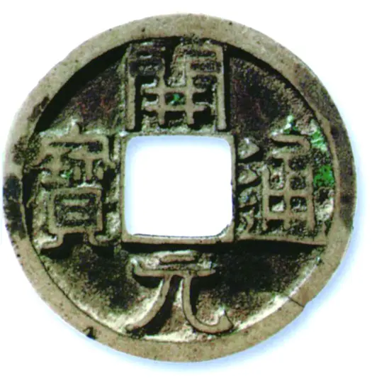
Монета с надписью «Кайюань тунбао» Портрет императора Сюань-цзуна
Портрет императора Сюань-цзунаЧанъань: устройство столицы
繁盛的长安城
Танская столица имела регулярную сетку улиц, жилые кварталы и отдельные рынки. Дворцовый район выражал политическую иерархию, а торговые кварталы показывали международный характер города. Среди его жителей и гостей были купцы из Центральной Азии, буддийские монахи и иностранные учащиеся.
В основе танской столицы лежал город Дасин, построенный при Суй. После переименования его продолжали расширять почти столетие. По сравнению со старой частью современного Сианя танская столица занимала примерно в десять раз большую площадь.
 Столичная стена и надвратная башня
Столичная стена и надвратная башня Каменная плита с надписью
Каменная плита с надписьюСонгцэн Гампо и принцесса Вэньчэн
松赞干布和文成公主
Брак правителя Тибета с танской принцессой в VII веке закрепил дипломатические отношения. Книга связывает её путешествие с обменом ремесленными навыками, книгами и религиозными предметами. Событие вошло и в придворную историю, и в предания о Лхасе.
До обращения к танскому двору Сонгцэн Гампо объединил ряд племён Тибетского нагорья. Его интересовали знания и умения соседей. Брак с Вэньчэн книга рассматривает в связи с обменом между земледельческими и скотоводческими областями.
 Скульптурные изображения Сонгцэна Гампо и принцессы Вэньчэн
Скульптурные изображения Сонгцэна Гампо и принцессы Вэньчэн Дворец Потала в Лхасе
Дворец Потала в ЛхасеСюаньцзан: путешествие за сутрами
玄奘取经
Сюаньцзан отправился через Центральную Азию в Индию, чтобы разобраться в расхождениях буддийских текстов и изучить их язык. Вернувшись в Чанъань, он организовал перевод привезённых сочинений. Описание стран маршрута сохранило сведения далеко за пределами религиозной истории.
В романе «Путешествие на Запад» монаха сопровождают Сунь Укун и другие сказочные спутники. У героя был исторический прообраз. Сюаньцзан отправился в Индию за буддийскими текстами, чтобы разобраться в расхождениях известных ему толкований.
 Памятник Сюаньцзану
Памятник Сюаньцзану Персонажи «Путешествия на Запад»
Персонажи «Путешествия на Запад»Цзяньчжэнь и Япония
鉴真东渡
Японские монахи пригласили китайского наставника передать правила монашеского посвящения. Несколько попыток переправы окончились неудачей; Цзяньчжэнь потерял зрение, но достиг Японии. Его деятельность связывает историю буддизма с переносом книг, искусства и архитектурных традиций.
Цзяньчжэнь был монахом из Янчжоу и учил в монастыре Дамин. С просьбой приехать к ним обратились японские монахи. Морское путешествие пришлось повторять несколько раз, прежде чем ему удалось достичь Японии.
 Статуя монаха Цзяньчжэня
Статуя монаха Цзяньчжэня Модель корабля для морского перехода
Модель корабля для морского переходаМогао, Юньган и Лунмэнь
三大石窟
Три пещерных комплекса удобно запомнить по городам: Могао возле Дуньхуана, Юньган возле Датуна, Лунмэнь возле Лояна. В Могао особое место занимают росписи, а в Юньгане и Лунмэне хорошо видна эволюция монументальной скульптуры. Перенос столицы Северной Вэй в Лоян связал историю двух последних ансамблей.
Буддизм пришёл в Китай из Индии. Между его ранним распространением и расцветом пещерных храмов прошли века. По пластике фигур и оформлению гротов авторы показывают, как заимствованные религиозные сюжеты осваивали местные мастера.
Кэцзюй: экзамены на государственную службу
科举制
Созданная при Суй и развитая при Тан экзаменационная система открывала путь к службе через учёность. Успех зависел от знания текстов и умения писать; особенно престижной стала степень цзиньши. Доступ к образованию оставался неравным, но происхождение уже не было единственным основанием для назначения.
Экзамены возникли при Суй, а при Тан стали одним из главных путей на службу. К регулярным испытаниям добавлялись особые экзамены, назначавшиеся по решению императора. Выбор чиновника тем самым связывался с результатом его письменной работы.
 Экзамен при императорском дворе
Экзамен при императорском дворе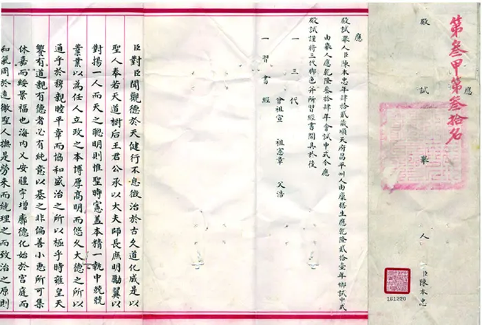
Экзаменационная работаПять династий, Ляо, Сун, Ся, Цзинь и Юань
Пять династий, Сун и Юань
封建社会的继续发展和民族政权并立时期五代 辽宋夏金元
После падения Тан престол на севере переходил от одного военного дома к другому. Сун объединила значительную часть страны, но рядом существовали Ляо, Западная Ся и Цзинь. Это параллельные государства на карте одной эпохи. Под властью Юань политическое пространство снова объединилось.
После отстранения последнего танского императора в северном Китае последовательно правили Поздние Лян, Тан, Цзинь, Хань и Чжоу. Их называют Пятью династиями. В других частях страны в те же десятилетия существовали самостоятельные государства.
Как основатель Сун подчинил военачальников двору
杯酒释兵权
Чжао Куанъинь сам пришёл к власти благодаря поддержке войска. По известному рассказу, за чашей вина он убедил влиятельных командиров отказаться от военной власти в обмен на обеспеченную жизнь. Сюжет объясняет важный выбор Сун: не допустить новой череды переворотов.
Чжао Куанъинь сам пришёл к власти, командуя войсками Поздней Чжоу при малолетнем государе. Став императором Сун, он понимал, что его военачальники располагают такой же возможностью. Отсюда его стремление вернуть командование под контроль двора.
Полководцы рода Ян
赤胆忠心的杨家将
Ян Е и представители следующих поколений служили Сун на северной границе в противостоянии с Ляо. Их судьбы стали основой большого цикла преданий и театральных пьес. Книга позволяет различить историческую службу семьи и позднейший коллективный образ преданных защитников.
За преданиями о семейной верности стоит история Ян Е, защищавшего северную границу Сун. В книге указан конкретный пункт — застава Яньмэнь. Именно там в 980 году его войско столкнулось с войсками Ляо.
Бао Чжэн и образ неподкупного судьи
秉公执法的“包青天”
Бао Чжэн служил при Северной Сун и приобрёл репутацию чиновника, готового выступать против злоупотреблений влиятельных людей. Прозвище Бао Цинтянь передаёт представление о ясном, справедливом суде. Народные рассказы позднее превратили сановника в героя судебных загадок.
Бао Чжэн происходил из Хэфэя и успел послужить как в уездах, так и при дворе. Народная традиция запомнила его способность разбирать жалобу простого человека, даже когда решение задевало влиятельную семью.
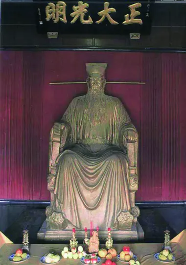
Бронзовая статуя Бао Чжэна в Хэфэе Экспонат мемориала Бао Чжэна в Кайфэне
Экспонат мемориала Бао Чжэна в КайфэнеЮэ Фэй и Южная Сун
忠心报国的岳飞
После утраты севера Юэ Фэй командовал войсками Южной Сун в борьбе с Цзинь. Его стремление продолжать кампанию столкнулось с курсом двора на соглашение. Отзыв, заключение и казнь сделали полководца символом верности, трагически разошедшейся с политикой государя.
Юэ Фэй вступил в армию двадцатилетним. Целью его службы книга называет возвращение земель Центральной равнины, занятых Цзинь. Его авторитет среди солдат авторы связывают с личной требовательностью и заботой о людях.
 Статуя Юэ Фэя в мемориальном храме Ханчжоу
Статуя Юэ Фэя в мемориальном храме Ханчжоу Ворота мемориала Юэ Фэя
Ворота мемориала Юэ ФэяВэнь Тяньсян
历史名臣文天祥
При падении Южной Сун Вэнь Тяньсян участвовал в сопротивлении монгольскому завоеванию. В плену он отказался перейти на службу Юань. Его стихи о том, что человек оставит после себя в истории, придали его судьбе значение, пережившее саму династию.
Вэнь Тяньсян из Цзянси ещё молодым отличился на государственных экзаменах. Когда войска Юань приближались к столице Южной Сун, двор призвал на помощь провинции. Учёный и чиновник оказался среди тех, кто откликнулся на этот призыв.
 Статуя Вэнь Тяньсяна
Статуя Вэнь Тяньсяна Музей Вэнь Тяньсяна в Цзиане, Цзянси
Музей Вэнь Тяньсяна в Цзиане, ЦзянсиЧингисхан и Хубилай
成吉思汗与忽必烈
В 1206 году Тэмуджин был провозглашён Чингисханом после объединения монгольских племён. Его внук Хубилай решал другую задачу — управление обширной оседлой империей. Он дал династии имя Юань, сделал Даду столицей и завершил покорение Южной Сун.
Темучин объединил монгольские племена и в 1206 году получил титул Чингисхана. Хубилай принадлежал уже к следующему поколению правящего дома. Основание им династии Юань и завершение завоевания Южной Сун — отдельные этапы рассказа.
Марко Поло при Юань
马可· 波罗来华
Венецианский путешественник прибыл в Азию с отцом и дядей. Рассказ о городах, дорогах, почтовых станциях и бумажных деньгах познакомил европейских читателей с державой Хубилая. Исторический сюжет темы — не только само путешествие, но и долгая жизнь его описания.
Марко Поло выехал из Венеции вместе с отцом и дядей. Путь ко двору Хубилая занял несколько лет. Через семейное путешествие авторы показывают, как далеко простирались сухопутные связи эпохи Юань.
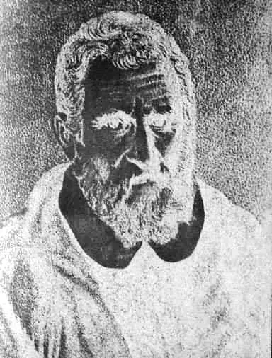
Портрет Марко Поло Страница книги о путешествии Марко Поло
Страница книги о путешествии Марко ПолоЧетыре великих изобретения
四大发明
Бумага дала более удобный материал для письма, печать облегчила распространение текстов, магнитный компас помогал держать курс. Четвёртым изобретением в традиционном перечне считается порох. Они возникли в разные эпохи и постепенно изменили практики далеко за пределами Китая.
Первую бумагу из растительных волокон знали уже при Западной Хань, но писать на ней было неудобно. При Восточной Хань Цай Лунь использовал древесную кору, остатки пеньки, тряпьё и старые рыболовные сети. Эти материалы позволили удешевить производство.
 Оттиск старинного печатного текста
Оттиск старинного печатного текста Старинная ракета
Старинная ракетаКайфэн на свитке «По реке в день Цинмин»
清明上河图
Свиток Чжан Цзэдуаня ведёт взгляд из сельских окрестностей к оживлённому мосту и улицам северосунской столицы. Лодки, лавки, повозки и прохожие рассказывают о снабжении города и разделении труда. По картине можно изучать повседневную жизнь, редко попадающую в биографии государей.
Художник Чжан Цзэдуань ведёт взгляд вдоль реки Бянь. По мере разворачивания свитка пригородный пейзаж уступает место мосту, торговым рядам и многолюдным улицам. Устройство столицы Северной Сун раскрывается через повседневные занятия её жителей.
 Свиток «По реке в день Цинмин»
Свиток «По реке в день Цинмин» Мост и лодки на свитке Чжан Цзэдуаня
Мост и лодки на свитке Чжан ЦзэдуаняСыма Гуан и «Цзы чжи тун цзянь»
司马光和《资治通鉴》
Сыма Гуан с помощниками расположил события многих столетий в хронологической последовательности. Название труда передаёт замысел «зерцала» для правителя: сравнивая решения предшественников, государь мог судить об их последствиях. Этим устройство книги отличается от биографической композиции «Шицзи».
Сначала Сыма Гуан составил сравнительно короткую историю от Сражающихся царств до конца Цинь. Замысел большого труда вырос из убеждения, что правителям нужно видеть последствия решений предшественников в порядке самих событий.
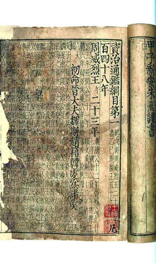
Старинное издание исторического труда Портрет Сыма Гуана
Портрет Сыма ГуанаМин и ранняя Цин
Мин и ранняя Цин
统一的多民族国家进一步发展和封建社会由盛而衰时期——明清
При Мин восстановилось правление династии, основанной Чжу Юаньчжаном, расширились ремесло, торговля и дальнее мореплавание. После кризиса XVII века столицей овладела Цин. Обзор доводит повествование до кануна Опиумной войны и сопоставляет внутреннее развитие с изменением морских связей.
Начало Мин в изложении связано с Нанкином, а падение династии — с Пекином в 1644 году. Для ранней Цин авторы выбирают другую границу: Опиумная война 1840 года открывает в книге следующий исторический период.
Чжу Юаньчжан — основатель Мин
明朝开国皇帝朱元璋
Выходец из бедной семьи поднялся в ходе восстаний против Юань. Победы над соперниками дали ему опору в долине Янцзы; в 1368 году он провозгласил Мин со столицей в Нанкине. При новом дворе восстановление земледелия сочеталось с жёсткой централизацией управления.
К концу Юань разливы Хуанхэ неоднократно лишали земледельцев посевов. На этом фоне в середине XIV века начались крупные восстания. Возвышение Чжу Юаньчжана авторы прослеживают от участия в этом движении до создания двора в Нанкине.
Семь плаваний Чжэн Хэ
郑和下西洋
В первой половине XV века флот Чжэн Хэ совершил семь экспедиций через Юго-Восточную Азию и Индийский океан, достигнув берегов Восточной Африки. На судах везли посольства, подарки и товары. Масштаб путешествий показывает возможности минского кораблестроения и придворной дипломатии.
За отправкой флота стоял император Чжу Ди. Под «Западным океаном» в этой главе понимаются воды к западу от Брунея, вплоть до Индийского океана. Плавания были способом представить минский двор правителям далёких стран.
Ци Цзигуан и защита побережья
戚继光抗倭
Нападения морских отрядов вокоу нарушали жизнь приморских поселений. Минский полководец Ци Цзигуан организовал силы для защиты побережья Чжэцзяна и Фуцзяни. В памяти жителей его деятельность сохранилась прежде всего как восстановление безопасности прибрежных районов.
При Мин власти ограничили частную морскую торговлю, сохранив официальные контакты с другими дворами. На побережье одновременно действовали пиратские группы. На этом фоне авторы рассказывают о службе Ци Цзигуана и положении приморских поселений.
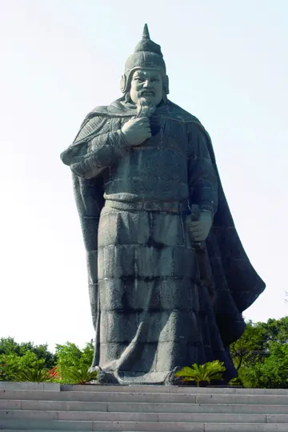
Памятник Ци ЦзигуануСтаринная крепость Чунъу в провинции ФуцзяньХай Жуй — чиновник эпохи Мин
清官海瑞
Хай Жуй прославился строгим отношением к злоупотреблениям и прямотой в обращении к власти. Он подал императору Цзяцзину доклад с критикой управления, понимая риск ареста. Его судьба показывает противоречие между обязанностью чиновника увещевать государя и опасностью такого поступка.
В 1558 году Хай Жуй получил назначение в уезд Чуньань в Чжэцзяне. Он занялся пересмотром несправедливых приговоров. Позже ту же прямоту он проявил в столице, направив императору доклад с критикой его многолетнего ухода от государственных дел.
Статуя Хай Жуя в мемориальном зале Гробница Хай Жуя на Хайнане
Гробница Хай Жуя на Хайнане Ли Цзычэн и конец Мин
闯王李自成
Неурожаи, налоги и кризис управления питали восстания последних десятилетий Мин. Силы Ли Цзычэна в 1644 году заняли Пекин, а император Чунчжэнь погиб. Победа оказалась краткой: вскоре в столицу вошли войска Цин.
Потеря крестьянами земли сочеталась с ростом налоговой нагрузки, засухами и нашествиями саранчи. В 1627 году восстание началось на пострадавшем севере Шэньси. Через несколько лет в движении участвовали уже десятки самостоятельных отрядов.
Надгробная стела Ли Цзычэна в уезде ТуншаньРезиденция Ли Цзычэна в Мичжи, Шэньси Чжэн Чэнгун и Тайвань
郑成功收复台湾
Сохраняя верность Мин после прихода Цин, Чжэн Чэнгун перенёс центр своих действий к Тайваню. В 1662 году голландский гарнизон капитулировал. Глава связывает прекращение голландского правления с более широким конфликтом за контроль над юго-восточным побережьем.
В книге начало голландского продвижения на Тайвань отнесено к 1624 году. Чжэн Чэнгун отправился к острову с Цзиньмэня. Местные жители помогли прибывшим добраться до берега, и прежнее сопротивление колониальным властям получило поддержку извне.
Остров Тайвань Памятник Чжэн Чэнгуну на острове Гуланъюй
Памятник Чжэн Чэнгуну на острове Гуланъюй Канси, Юнчжэн и Цяньлун
康乾盛世
Три долгих правления образуют в книге период консолидации Цин. Двор укреплял управление, поощрял земледелие и расширял контроль над пограничными областями. Рост хозяйства соседствовал с ограничениями морской торговли, поэтому внутреннее процветание и внешняя открытость здесь не совпадали.
Когда Канси занял престол, власть Цин ещё оспаривали сторонники Мин. Император приглашал ханьских учёных на службу и поддерживал конфуцианскую традицию. Культурная политика в этой главе связана с задачей укрепить новый двор.
 Карта владений эпохи ЦинПлощадь перед дворцовым залом
Карта владений эпохи ЦинПлощадь перед дворцовым заломУчёные Мин и их книги
科学巨匠与巨著
Ли Шичжэнь систематизировал сведения о лекарственных веществах, Сюй Гуанци собрал знания о земледелии и орошении, а Сун Инсин описал ремесленные производства. Путевые записи Сюй Сякэ основаны на многолетних наблюдениях местности. В этих трудах практическое знание стало предметом последовательного описания.
Ли Шичжэнь вырос в семье врачей в нынешнем Хубэе. Сравнивая старые лечебники, он обнаруживал пропуски и противоречия. Именно это побудило его сверять книжные сведения с наблюдениями и заново составить описание лекарственных веществ.
Иллюстрированный разворот медицинского сочинения Памятник путешественнику Сюй Сякэ
Памятник путешественнику Сюй Сякэ ↑ ОглавлениеКитай в 1921–1949 годах
В исходном PDF за печатной страницей 170 следует 201. Изложение возобновляется с образования КПК в 1921 году.
Образование Коммунистической партии Китая
中国共产党的成立
После движения 4 мая 1919 года марксистские кружки появились в нескольких городах. В Шанхае одним из организаторов был Чэнь Дусю, в Пекине — Ли Дачжао. В июле 1921 года представители кружков собрались на первый съезд, начавшийся в Шанхае и завершившийся в Цзясине.
Авторы связывают основание партии с двумя предшествующими событиями. Российская революция 1917 года привлекла внимание китайских интеллектуалов к марксизму. Китайское движение 4 мая показало им значение рабочих выступлений внутри самой страны.
Шанхайское здание, где собирались делегаты первого съезда КПК Внутри лодки на озере Наньху в Цзясине, куда перенесли заседание первого съезда КПК
Внутри лодки на озере Наньху в Цзясине, куда перенесли заседание первого съезда КПК Первое сотрудничество Гоминьдана и КПК
第一次国共合作
Сунь Ятсен искал опору для объединения страны, которой управляли конкурирующие военные группировки. Сотрудничество оформилось в 1924 году: коммунисты вступали в Гоминьдан индивидуально, сохраняя собственную партию. Одним из общих проектов стала военная школа Хуанпу.
Договорённость имела конкретную организационную форму: коммунисты могли вступать в Гоминьдан индивидуально. В январе 1924 года в его съезде в Гуанчжоу участвовали, среди прочих, Ли Дачжао и Мао Цзэдун.
 Вход в комплекс военной школы Хуанпу
Вход в комплекс военной школы Хуанпу Газета периода сотрудничества Гоминьдана и КПК
Газета периода сотрудничества Гоминьдана и КПКСеверный поход
北伐战争
В 1926 году Национально-революционная армия выступила из Гуандуна против региональных военных правителей. Продвижение к бассейну Янцзы изменило политическую карту страны. Разрыв Гоминьдана и коммунистов в 1927 году разрушил коалицию, с которой начинался поход.
Базой похода стал Гуандун, где в 1925 году возникло национальное правительство. Движение началось из Гуанчжоу, прошло через Чанша к Уханю. В изложении книги ему предшествовала организация рабочих и крестьян на местах.
 Юэцзянлоу, где размещался штаб отдельного полка Е Тина
Юэцзянлоу, где размещался штаб отдельного полка Е Тина Мавзолей Сунь Ятсена в Нанкине
Мавзолей Сунь Ятсена в НанкинеНаньчанское восстание
南昌起义
После распада союза с Гоминьданом силы под руководством коммунистов 1 августа 1927 года выступили в Наньчане. Удержать город надолго не удалось. В исторической традиции КНР дата закрепилась как начало самостоятельной вооружённой организации КПК.
Весной 1927 года в Шанхае начались аресты и убийства коммунистов и их сторонников. Затем раскол распространился на другие провинции и на правительство в Ухане. Этот разрыв объясняет, почему прежние союзники встретились в Наньчане уже как противники.
 Участники Наньчанского восстания в живописиЗдание штаба восстания в Наньчане
Участники Наньчанского восстания в живописиЗдание штаба восстания в НаньчанеВеликий поход
中国工农红军长征
В 1934 году основные силы Красной армии оставили базу в Цзянси. Отступление через несколько провинций, горные и болотистые районы привело к формированию новой опоры на северо-западе. Совещание в Цзуньи стало важной вехой изменения руководства партии.
До похода одной из баз коммунистов стал горный район Цзинганшань на границе Хунани и Цзянси. Давление на базы усиливалось после нескольких кампаний Гоминьдана. Так авторы объясняют решение оставить освоенные районы и начать длительный переход.
Здание, где проходило совещание в Цзуньи Маршрут Великого похода
Маршрут Великого похода Мукденский инцидент 18 сентября
“九一八”事变
В 1931 году взрыв у железной дороги возле Шэньяна стал поводом для выступления японской Квантунской армии. Последовала оккупация северо-восточных провинций и создание Маньчжоу-го. Для Ляонина это начало военной оккупации за несколько лет до общекитайской войны 1937 года.
Действие разворачивается у Лютаоху близ Шэньяна. Повреждение железной дороги японские военные приписали китайской стороне и использовали как предлог для занятия города. В книге последствия показаны и через песню людей, лишившихся родного дома.
Пу И и японский император в экипажеПортрет Пу И Северный Китай и движение 9 декабря
华北事变和“一二九”运动
По мере распространения японского давления на Северный Китай студенты Бэйпина вышли на демонстрацию 9 декабря 1935 года. Они требовали сопротивления внешней угрозе. Движение показало, как студенческие организации превращали региональный кризис в общенациональный политический вопрос.
Участники движения говорили, что в огромном Северном Китае уже трудно найти спокойное место даже для письменного стола. Эта студенческая формула объясняет характер выступления. На улицы Бэйпина вышли тысячи учащихся, требовавших сопротивления японскому давлению.
Участники студенческого движения Демонстрация студентов
Демонстрация студентов Сианьский инцидент
西安事变
В декабре 1936 года Чжан Сюэлян и Ян Хучэн задержали Чан Кайши в Сиане, добиваясь прекращения внутренней войны и сопротивления Японии. Переговоры с участием Чжоу Эньлая завершились освобождением Чан Кайши. Мирный исход открыл путь к возобновлению сотрудничества двух партий.
Чжан Сюэлян происходил с уже оккупированного Северо-Востока. Он убеждал Чан Кайши прекратить борьбу с коммунистами и направить силы против Японии. В Сиане к нему присоединился Ян Хучэн, когда прежние обращения к руководителю Гоминьдана не дали результата.
Чжан Сюэлян и Ян Хучэн Комната в мемориальном музее Сианьского инцидента
Комната в мемориальном музее Сианьского инцидента Инцидент у моста Лугоуцяо
“七七”事变
Столкновение китайских и японских частей у моста к юго-западу от Бэйпина произошло 7 июля 1937 года. Локальный кризис быстро перерос в широкомасштабную войну. В хронологии книги эта дата отличается от захвата северо-востока, начавшегося в 1931 году.
Рядом с мостом находился укреплённый город Ваньпин. После учений японские военные потребовали впустить их для поисков якобы пропавшего солдата. Отказ гарнизона и последовавший обстрел стали началом столкновения, названного по соседнему мосту.
Каменные львы на мосту ЛугоуцяоАрки моста Лугоуцяо Пинсингуань
平型关大捷
В сентябре 1937 года части 8-й армии добились победы над японскими силами у Пинсингуаня в Шаньси. Книга подчёркивает общественный отклик события на фоне тяжёлых отступлений. Оно стало одним из ранних символов организованного китайского сопротивления.
Пинсингуань расположен в северной части Шаньси на пути в глубь провинции. События глава помещает в контекст обороны Тайюаня. Участие 115-й дивизии Восьмой армии стало для авторов примером совместного сопротивления после начала полномасштабной войны.
Карта района Пинсингуаня Участники сражения в районе Пинсингуаня
Участники сражения в районе Пинсингуаня Нанкинская резня
南京大屠杀
После захвата Нанкина в декабре 1937 года японские войска совершили массовые убийства мирных жителей и пленных и другие преступления. Раздел переводит внимание с передвижения армий на судьбу населения оккупированного города. Фотографии и свидетельства стали важной частью сохранения памяти о жертвах.
Перед падением Нанкина японские войска заняли Шанхай. В столице жертвами стали как гражданские жители, так и разоружённые китайские военнослужащие. Авторы называют несколько мест массовых убийств у Янцзы, включая Сягуань и Яньцзыцзи.
 Архивная фотография жертв Нанкинской резни
Архивная фотография жертв Нанкинской резни Мемориальная надпись в Нанкине
Мемориальная надпись в НанкинеБитва за Тайэрчжуан
台儿庄战役
Весной 1938 года в районе Тайэрчжуана в Шаньдуне китайские силы под командованием Ли Цзунжэня одержали крупную победу. Она имела особое значение после падения Нанкина. Тема дополняет картину сопротивления рассказом об участии войск национального правительства.
Тайэрчжуан лежал примерно в пятидесяти километрах к северо-востоку от Сюйчжоу. Рядом проходили железная дорога Тяньцзинь — Пукоу и канал. Этим положением книга объясняет, почему небольшой город оказался важен для обороны крупного транспортного узла.
Карта района Тайэрчжуана Разрушения во время боёв за Тайэрчжуан
Разрушения во время боёв за Тайэрчжуан Китайская диаспора в годы войны
华侨与抗日战争
Китайцы за рубежом собирали пожертвования, организовывали медицинскую помощь и поддерживали снабжение страны. Среди организаторов авторы выделяют предпринимателя и общественного деятеля Чэнь Цзягэна. Для части добровольцев помощь означала личное возвращение и работу на транспортных маршрутах.
Китайцы, жившие за границей, обращались к общественности стран проживания и собирали средства. Глава прослеживает участие диаспоры с 1931 по 1945 год. Рядом с рассказом о сборах показаны делегаты, поддерживавшие непосредственную связь с Китаем.
 Знамя, подаренное китайскими детьми из Лондона бойцам Восьмой армииДелегация диаспоры с работниками представительства Восьмой армии в Чунцине
Знамя, подаренное китайскими детьми из Лондона бойцам Восьмой армииДелегация диаспоры с работниками представительства Восьмой армии в ЧунцинеПереговоры в Чунцине
重庆谈判
После капитуляции Японии в 1945 году оставался открытым вопрос о будущем политическом устройстве Китая. Мао Цзэдун прибыл в Чунцин на переговоры с Чан Кайши. Соглашение 10 октября зафиксировало общие намерения, но спор о власти и вооружённых силах остался нерешённым.
После капитуляции Японии Чан Кайши трижды приглашал Мао Цзэдуна приехать в Чунцин. Из Яньаня вместе с ним отправились Чжоу Эньлай и Ван Жофэй. Главным предметом спора оставалось будущее вооружённых сил и областей, которыми управляли коммунисты.
Мао Цзэдун и Чан Кайши во время переговоровУчастники поездки на переговоры в Чунцин Гражданская война и смена власти
解放战争
Возобновление масштабных боёв в 1946 году привело к решающему противостоянию Гоминьдана и КПК. Кампании в Маньчжурии, районе Хуайхая и Северном Китае изменили соотношение сил. В 1949 году коммунисты заняли Нанкин, а правительство Гоминьдана впоследствии переместилось на Тайвань.
На исходном этапе у Гоминьдана находились крупнейшие города и большинство транспортных магистралей. Авторы сопоставляют это преимущество с последующими изменениями в ходе войны. Особое место в рассказе занимают Шаньдун и район Шэньси, Ганьсу и Нинся.
 Мао Цзэдун на смотре войск в Бэйпине в марте 1949 годаВход в бывшую президентскую резиденцию в Нанкине
Мао Цзэдун на смотре войск в Бэйпине в марте 1949 годаВход в бывшую президентскую резиденцию в НанкинеКитайская Народная Республика
Китайская Народная Республика
现代中国
Последняя часть начинается с провозглашения КНР и прослеживает выбранные авторами вехи: восстановление государства, дипломатию, экономические реформы и возвращение Гонконга и Макао. Космическая программа и спорт показаны с точки зрения начала 2000-х годов.
Провозглашение КНР стало началом нового раздела авторской периодизации. Среди следующих вех книга выделяет восстановление хозяйства, изменение международного представительства Китая в ООН и затем переход к реформам при Дэн Сяопине.
Панорама города на берегуВорота Тяньаньмэнь Мао Цзэдун и провозглашение КНР
毛泽东与新中国的建立
Осенью 1949 года в Бэйпине собралась Народная политическая консультативная конференция. Она определила государственные символы и сформировала центральное правительство. 1 октября Мао Цзэдун провозгласил создание КНР на площади Тяньаньмэнь; дата стала национальным праздником.
Ещё до октябрьской церемонии политический консультативный совет выбрал столицу и флаг. Бэйпину вернули название Пекин, а «Марш добровольцев» утвердили в качестве временного гимна. Поэтому публичное провозглашение республики опиралось на уже принятые решения.
 Мао Цзэдун на церемонии основания КНРПровозглашение КНР в изображении художника
Мао Цзэдун на церемонии основания КНРПровозглашение КНР в изображении художникаУчастие Китая в Корейской войне
抗美援朝保家卫国
В 1950 году, когда война приблизилась к китайской границе, в Корею вступили китайские народные добровольцы под командованием Пэн Дэхуая. Издание объясняет решение руководства КНР опасениями за безопасность северо-востока. Боевые действия завершились перемирием в 1953 году.
Глава связывает вступление китайских добровольцев в войну с приближением боёв к китайской границе. После перехода через пограничную реку конфликт для Китая продолжался до соглашения о перемирии в Пханмунджоме летом 1953 года.
 Китайские добровольцы переходят ЯлуцзянДелегации на переговорах о перемирии
Китайские добровольцы переходят ЯлуцзянДелегации на переговорах о перемирииЧжоу Эньлай и внешняя политика КНР
周恩来与新中国外交
Чжоу Эньлай представлял новое государство на международных переговорах и связывал его дипломатию с принципами мирного сосуществования. На Бандунгской конференции 1955 года он искал общие интересы азиатских и африканских стран, несмотря на различия их политических систем.
Чжоу Эньлай одновременно возглавлял правительство и отвечал за внешнюю политику республики в её первые годы. Женевская конференция 1954 года дала ему возможность участвовать в многосторонних переговорах по Корее и Индокитаю.
 Чжоу Эньлай встречает Ричарда Никсона у самолёта, 1972 годУчастники обмена, вошедшего в историю как «пинг-понговая дипломатия»
Чжоу Эньлай встречает Ричарда Никсона у самолёта, 1972 годУчастники обмена, вошедшего в историю как «пинг-понговая дипломатия»Дэн Сяопин: реформы и открытость
邓小平与改革开放
Поворот конца 1970-х годов перенёс центр внимания на развитие хозяйства. В деревне расширилась самостоятельность семей, на побережье возникли особые экономические зоны. Шэньчжэнь стал наглядным примером того, как допуск инвестиций и внешней торговли мог преобразовать целый город.
В сельской местности перемены выразились в семейном подряде: хозяйственные обязанности и результаты труда стали теснее связаны с отдельной семьёй. Затем реформы распространились на городские предприятия и сопровождались расширением внешних экономических связей.
Портрет Дэн Сяопина на городской площади Улица Шэньчжэня
Улица Шэньчжэня Гонконг в 1997 году
香港回归
Переговоры Китая и Великобритании привели к договорённости о передаче Гонконга. 1 июля 1997 года он стал особым административным районом КНР. Формула «одна страна, две системы» позволяла совместить изменение государственного суверенитета с сохранением местных экономических и правовых институтов.
Авторы ведут предысторию от занятия острова Гонконг в 1841 году и договора 1842 года. На переговорах с Великобританией обсуждались и дата передачи, и правила жизни после неё. Было предусмотрено сохранение прежней экономической системы на пятьдесят лет.
Церемония передачи ГонконгаПраздничный салют в Гонконге Макао в 1999 году
澳门回归
Китай и Португалия определили порядок передачи Макао в двусторонней декларации. 20 декабря 1999 года был учреждён особый административный район. Сопоставление с Гонконгом помогает запомнить как общую модель устройства, так и разницу дат и партнёров по переговорам.
Китайско-португальские переговоры 1986–1987 годов завершились совместной декларацией. Между подписанием документа и передачей управления в декабре 1999 года прошло более двенадцати лет. Книга доводит рассказ до ночной церемонии смены флагов.
 Фасад собора Святого Павла в МакаоЦеремония передачи Макао
Фасад собора Святого Павла в МакаоЦеремония передачи МакаоКитайская пилотируемая космонавтика
载人航天飞行的巨大成就
В октябре 2003 года Ян Ливэй совершил орбитальный полёт на корабле «Шэньчжоу-5». Событие стало итогом программы, включавшей беспилотные испытания. Раздел показывает, как космический полёт стал и технологической вехой, и заметным общественным событием.
Пилотируемый запуск готовили поэтапно. Перед полётом Ян Ливэя состоялись четыре беспилотных запуска. Его «Шэньчжоу-5» совершил четырнадцать витков вокруг Земли и благополучно вернулся.
 Старт «Шэньчжоу-5»Ян Ливэй в скафандре
Старт «Шэньчжоу-5»Ян Ливэй в скафандреКитайский спорт на мировой арене
中国体育走向世界
Выступление стрелка Сюй Хайфэна в Лос-Анджелесе в 1984 году принесло КНР первое олимпийское золото. Успехи женской волейбольной сборной дали другой узнаваемый символ эпохи. Завершает книгу подготовка к Пекину-2008: для авторов Игры ещё впереди.
В 1932 году на Игры в Лос-Анджелес отправился китайский бегун Лю Чанчунь. Позднее тайваньский десятиборец Ян Чуаньгуан завоевал серебро, а барьеристка Цзи Чжэн — бронзу. Книга различает первое участие, первые медали китайских спортсменов и первое золото сборной КНР.
 Спортсмены с красными лентамиПять талисманов Пекинской олимпиады
Спортсмены с красными лентамиПять талисманов Пекинской олимпиады